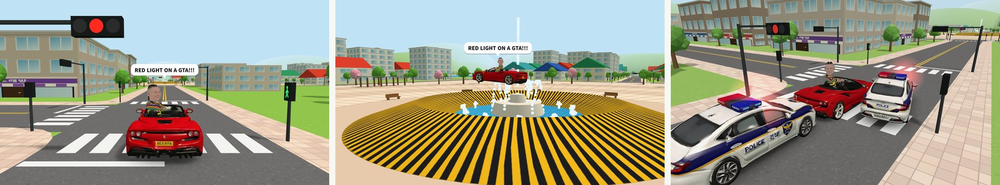
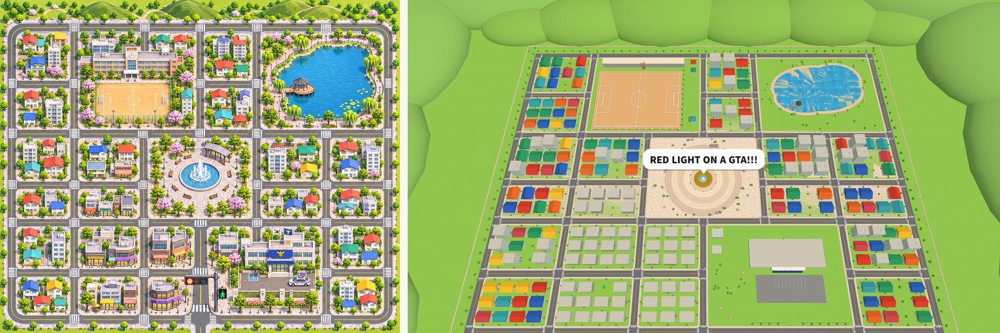
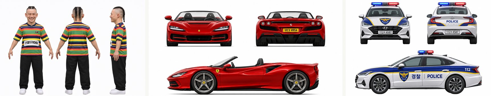
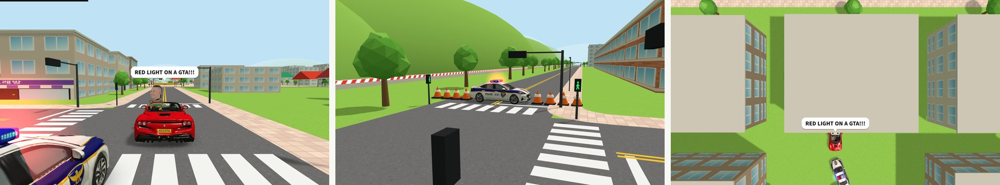
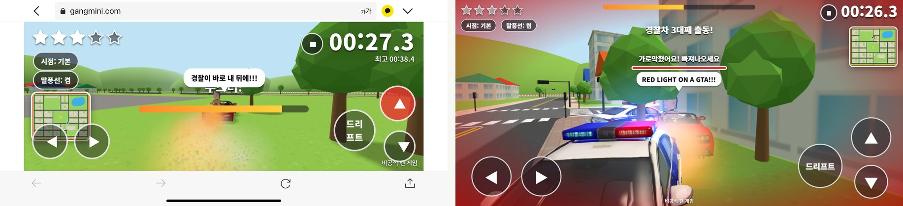

빨간 페라리 오픈카를 탄 바이스벌사가 경찰차를 피해 달린다. 처음엔 한 대가 쫓아오고, 시간이 갈수록 늘어서 일곱 대까지 온다. 경찰차에 둘러싸여 3초 동안 못 움직이면 화면이 흑백으로 느려지면서 wasted. 점수는 버틴 시간이다. 드리프트하면 "스껄!", 부스터를 켜면 5초 동안 "아~~~"가 나오고, 머리 위 말풍선은 "RED LIGHT ON A GTA!!!"를 외친다.
비공식 팬 게임이다. 사흘 동안 만들었다. 범퍼카 2026과 감스트 스쿠터에서 쌓은 것(Tripo 모델 손질, 앉히기, 빌드 없는 Three.js)을 거의 그대로 썼고, 새로 붙잡은 건 쫓아오는 쪽이었다. 경찰차가 어떻게 길을 찾고, 얼마나 빨라야 하고, 언제 "잡혔다"고 칠 것인가. 이 글은 그걸 정하고 고친 기록이다.

한눈에 보는 구조
게임 자체에는 서버가 없다. 맵, 주행, 경찰 일곱 대의 판단, 소리, wasted 판정까지 전부 방문자의 브라우저에서 돈다. 서버가 하는 일은 둘뿐이다. 파일 8.4MB 를 한 번 건네주는 것(Cloudflare Pages), 그리고 순위표를 받아 적는 것(bamti-bomb). 링크는 지난번처럼 목록에 올리지 않고 인스타 댓글 DM 으로만 나눠 준다.
← 옆으로 밀어 보기 →
무엇을 왜 골랐나
| 자리 | 고른 것 | 이유 |
|---|---|---|
| 그리기 | Three.js + 순수 JS, 빌드 없음 | 범퍼카·스쿠터에서 쓰던 구조. 고치고 새로고침이면 끝 |
| 맵 | 코드로 쌓은 동네 (모델 파일 0) | 건물 200채, 나무 수백 그루를 Tripo 로 만들면 무겁고 부딪힘도 따로 만들어야 한다. 상자로 쌓으면 모양이 곧 부딪힘이다 |
| 주인공 · 페라리 · 경찰차 | Tripo (AI 3D 생성) 세 개만 | 얼굴과 차는 "그 사람, 그 차"로 보여야 한다. 코드 상자로는 안 된다 |
| 경찰 길찾기 | 5m 격자 거리장 + 보이면 직선 | 일곱 대가 따로 길을 찾으면 무겁다. 내 위치에서 한 번 퍼뜨린 지도를 다 같이 내려간다 |
| 소리 | 목소리는 영상에서 자른 mp3, 사이렌·엔진은 합성 | 사이렌은 거리에 따라 계속 커지고 작아져야 해서 파일보다 합성이 편하다 |
| 순위표 | bamti-bomb 서버의 일반 순위표 한 칸 | 서버를 하나도 안 고치고 칸 이름만 새로 쓰면 된다 |
| 확인 | 헤드리스 Chrome + 화면 없는 시뮬레이션 | "경찰이 너무 빠른가"는 한 판 돌려 봐서는 모른다. 봇으로 여러 판을 몇 초 만에 돌렸다 |
| 배포 · 링크 | Cloudflare Pages 숨은 주소 + 리틀리 DM | 지난 두 게임과 같은 길. 댓글이 곧 링크 요청이다 |
Three.js — 브라우저의 3D 기능(WebGL)을 쓰기 쉽게 감싼 자바스크립트 라이브러리. 장면·카메라·조명·모델을 객체로 다룬다.
InstancedMesh — 같은 모양을 위치만 바꿔 수백 번 그릴 때, 그리기 명령을 한 번으로 묶는 방법. 나무 수백 그루가 그리기 명령 몇 개로 끝난다.
헤드리스 Chrome — 창 없이 돌아가는 크롬. 스크립트로 게임을 열고, 키를 누르고, 화면을 찍는다.
코드는 다섯 파일
← 옆으로 밀어 보기 →
맵 — 그림 한 장의 좌표를 그대로 옮기기

맵 그림(1374×1145px)을 받았다. 도로가 어디로 지나가고 학교·호수·분수광장·경찰서가 어느 블록에 있는지가 다 그려져 있었다. 그래서 그림 위의 픽셀 좌표를 그대로 숫자로 적었다. 1px 을 0.72m 로 잡으면 동네가 가로 1km, 세로 0.8km 쯤 된다.
// world.js — 그림의 픽셀 좌표 → 게임 좌표(m)
const wx = (px) => (px - 687) * 0.72; // 그림 가운데가 0
// 세로 도로: [x, 위 끝 y, 아래 끝 y] (그림에서 읽은 픽셀)
const VR = [[30, 95, 1080], [255, 95, 1080], [490, 455, 1080], ...];
// 블록: [왼 도로, 위 도로, 오른 도로, 아래 도로, 종류]
const BLOCKS = [[255, 95, 685, 455, "school"], [880, 95, 1345, 455, "lake"], ...];
블록 종류마다 채우는 함수가 따로 있다. school 은 벽돌 본관과 시계탑, 모래 운동장, lake 는 타원 세 개를 겹친 호수와 정자, 수양버들,
police 는 경찰서 본관과 주차장, house·shop 은 칸을 나눠 집과 가게를 세운다. 길은 모두 2차선, 교차로마다 차 신호등은 늘 빨간불, 보행자 신호등은 늘 초록불이다(말풍선의 "RED LIGHT" 때문이다).
부딪힘은 칸에 넣어 둔다
건물은 네모, 나무와 분수는 원으로 부딪힘을 만든다. 차가 움직일 때마다 수백 개를 다 확인할 수 없으니, 맵을 24m 칸으로 나눠 각 칸에 걸친 것만 담아 둔다. 차는 자기 주변 칸 네 개쯤만 본다. 차 자체는 앞·가운데·뒤 원 세 개로 다룬다. 길쭉한 차를 원 하나로 하면 옆이 비고, 네모로 하면 계산이 복잡해진다. 벽에 부딪히면 벽 쪽 속도만 없애서 벽을 따라 미끄러진다.
고친 것들
- 멀리서 깜빡이는 땅. 잔디·보도·도로·호수를 0.02m 차이로 겹쳐 깔았더니, 멀리서 볼 때 그래픽 카드가 어느 게 위인지 헷갈려 줄무늬로 깜빡였다(z-fighting). 층 사이를 0.07~0.15m 로 벌리고 카메라가 보는 가장 가까운 거리를 0.5 → 0.8m 로 늘려 없앴다.
- 도로 가장자리의 초록 틈. 보도가 살짝 떠 있어 그 아래로 잔디가 보였다. 아스팔트를 보도 밑으로 1m 더 깔았다.
- 골목. 처음엔 건물이 빽빽해서 골목으로 숨을 수가 없었다. 건물 사이를 8~10m 비우고, 나무는 골목 한가운데가 아니라 벽에서 1.1m 에 붙여 심었다. 가로수도 건물 정면 앞에만 둬서 골목 입구를 막지 않는다. 차 크기를 바꿀 때마다(아래) 이 간격도 같이 다시 맞췄다.
- 맵 끝이 어디인지. 처음엔 보이지 않는 벽에 막혔다. 빨강·하양 줄무늬 낮은 담을 둘렀고, 담 바로 앞에 줄지어 있던 나무를 길 쪽으로 옮겨 담과 나무 사이에 22m 쯤 달릴 틈을 남겼다. 그 틈을 왔다 갔다 하는 장면을 릴스로 찍고 싶다고 해서다.
주인공과 차 — Tripo 로 세 개

주인공·페라리·경찰차 세 개만 Tripo 로 만들었다. 순서는 스쿠터 때와 같다.
← 옆으로 밀어 보기 →
뒤에서 찍는데 얼굴이 보이게
추격 게임은 카메라가 차 뒤에 있다. 그대로면 게임 내내 뒤통수만 보인다. 그래서 바이스벌사가 카메라 쪽을 돌아보게 했다. "경찰이 바로 내 뒤에!!!"와도 맞는다. 고개를 목뼈 하나로 146° 돌리면 목이 꽈배기처럼 꼬인다. 허리 14%, 목 36%, 머리 50% 로 나눠 돌렸다. 머리는 3면도에서 이미 컸지만 게임에서 1.5배 더 키웠다.
한 번 고쳤다. 계속 뒤만 보니까 "앞을 한 번도 안 보는 건 좀 그렇다"는 말을 들었다. 지금은 3~4.5초 돌아보고 1~1.8초 앞을 보기를 번갈아 한다. 위에서 보는 시점에서는 늘 앞을 본다.
차 크기를 세 번 정했다
처음 크기(길이 5.4m)는 맵에 비해 작아 보였다. "한 차선에 꽉 차게" 2.35배로 키웠더니 이번엔 집과 나무가 장난감처럼 보였다. 1.5배로 돌아왔다(폭 3.5m, 길이 8.1m). 모델은 그대로 두고 차와 사람이 함께 들어 있는 묶음 하나를 키웠다. 앉히기·운전대 자리 계산을 다시 하지 않아도 되고, 바이스벌사도 같은 비율로 커진다. 대신 부딪힘 원, 경찰이 둘러싸는 간격, 카메라 거리, 연기·바퀴 자국 크기, 골목 폭을 크기마다 다시 맞춰야 했다.
운전 — 부스터는 소리 길이에 맞춘다
← 옆으로 밀어 보기 →
목소리는 영상 하나에 붙어 있었다. 소리 크기를 0.25초씩 재 보니 0~5.16초가 "아~~~", 0.87초 쉬고 6.03초부터가 "스껄"이었다. 그 자리에서 잘라 각각 mp3 로 만들었다. 목소리가 작아서 둘 다 같은 만큼(14.5dB) 키웠다. 녹화본에서 자른 다른 "스껄"도 넣어 버튼으로 비교해 들어 봤는데, 결국 원래 것으로 정하고 버튼은 뺐다.
부스터를 켠 직후 Shift 를 떼지 않은 채면 바로 다음 드리프트가 걸려 부스터가 꺼져 버렸다. 부스터를 켠 뒤엔 Shift 를 한 번 떼야 다음 드리프트가 되게 막았다.
경찰 — 길찾기, 돌진, 가두기

← 옆으로 밀어 보기 →
길찾기는 한 번만, 일곱 대가 같이
맵을 5m 칸으로 나눠 칸마다 지나가는 값을 매겼다. 도로 10, 블록 안 32, 나무 근처 60, 호수 70, 건물은 못 지나감. 0.25초마다 내 차가 있는 칸에서부터 거리를 퍼뜨려 모든 칸에 "여기서 내 차까지 얼마나 남았나"를 적는다(다익스트라). 경찰차는 자기 칸에서 이웃 중 숫자가 가장 작은 쪽으로 몇 칸 앞을 보고 달리면 된다. 경찰이 일곱 대여도 계산은 한 번이다.
처음엔 블록 안과 도로 값을 비슷하게 줘서 경찰이 지름길을 찾겠다고 나무 사이로 들어가 끼었다. 한 판에 후진을 40~50번씩 했다. 블록 안을 비싸게(18 → 32) 하자 큰길로만 다닌다. 그래도 끼면 0.8초 동안 후진하고, 8초 넘게 못 빠져나오면 화면에 안 보일 때 다른 길에서 다시 나오게 했다.
경찰 속도는 다섯 번 바꿨다
| 판 | 경찰 기본 속도 | 들은 말 · 본 것 |
|---|---|---|
| 1 | 24 → 27 | "내 차가 훨씬 빨라서 따라잡질 못해" — 내 차 실제 최고 속도가 설정값 27 이 아니라 29.5 였다 |
| 2 | 31.5 → 35, 자동 부스터 | 코너는 경찰이 둔하게 해서 "요리조리 무빙"으로 따돌리게 |
| 3 | 37 → 39.5, 코너링도 경찰이 위 | "맵이 넓어서 나한테 유리하니 그 정도 핸디캡은" |
| 4 | 58 → 62 (내 부스터 41 의 1.5배) | 들이받기 + 가두기 추가. "너무 빠르다" |
| 5 | 51.5 → 54.5 (1.3배) → 47.5 → 50.5 (1.2배) | 지금 값. 바짝 붙으면 내 속도 +16 까지만 낸다 |
숫자만 보면 경찰이 내 차보다 1.7배 빠른데도 게임이 된다. 경찰은 바짝 붙으면 일부러 속도를 내 속도 근처로 떨어뜨리기 때문이다. 멀리서는 빨리 따라오고, 가까이서는 박을 각을 잰다.
박혔는데 더 빨라지는 차
경찰이 세게 들이받게 바꾸자 이상한 일이 생겼다. 뒤에서 박은 경찰이 내 차를 밀어서 내 차가 부스터도 없이 37 까지 빨라졌다. 직선에서는 경찰에게 쫓기는 편이 더 빨랐다. 세 가지로 막았다.
- 한 번 박은 경찰은 1초 동안 내 속도의 80% 로 물러났다가 다시 달려든다.
- 바로 뒤에 붙으면 밀지 않고 옆 차선으로 빠져서 앞지른다(앞을 막으러).
- 박히면 내 차는 박힌 세기만큼 휙 돌고, 최고 속도의 60% 로 떨어진다. 밀려나는 빠르기는 한 번에 6m/s 까지만. 처음엔 경찰차를 내 차의 두 배 무게로 쳐서 18m/s 로 튕겨 나갔고, "너무 많이 밀린다"는 말을 들었다.
"잡혔다"를 정의하기 — wasted 판정
← 옆으로 밀어 보기 →
처음 줄어드는 속도는 차는 속도의 두 배였다. 한 번 빠져나오면 금방 풀리게 하려고 그랬는데, "똑같이 줄도록" 바꿔 달라고 해서 1:1 로 바꿨다. 이제는 막혔다 빠져나온 직후 또 막히면 금방 잡힌다.
잡히면 0.7초에 걸쳐 시간이 0.09배로 느려지고, 화면에 CSS 필터로 흑백·대비를 걸고, 어두운 띠 위로 빨간 "wasted"가 커졌다가 자리 잡는다. 사이렌은 음이 아래로 늘어지며 꺼진다. 2.7초 뒤 결과 카드가 뜬다.
한 번은 판정이 아예 안 걸렸다. 차를 2.35배로 키웠을 때, 경찰이 둘러싸는 자리는 그대로 "닿기 직전"이라 경찰이 0.7m 떨어진 채 멈춰 서 버렸다. 가둬 놓고 아무도 안 닿아 있는 꼴이었다. 자리를 "맞닿게"로 바꿨다. 크기를 바꿀 때마다 자동 테스트(가만히 있으면 몇 초 뒤 잡히나)를 다시 돌린 덕에 바로 알았다.
방해 요소 — 바리케이드와 수배 별
경찰을 빠르게 해도 "그래도 잘 안 잡힌다"고 했다. 테스트에서도 드리프트·부스터를 안 쓰는 봇이 8판 중 3판을 4분 넘게 버텼다. 계속 움직이기만 하면 wasted 조건이 안 걸리기 때문이다. 방해 요소 다섯 가지를 골라 보게 했고, 경찰 바리케이드를 넣었다.
- 30초부터, 내가 달려가는 방향 80~220m 앞 교차로의 건너편 출구를 막는다. 경찰차 한 대가 길을 가로로 막고, 양옆 보도 끝까지 라바콘. 교차로에서 꺾으면 피한다.
- 라바콘은 뚫을 수 있지만 하나 칠 때마다 속도가 25% 준다. 친 콘은 날아가 굴러 떨어진다.
- 바리케이드는 생겼다 사라진다. 부딪힘 칸과 길찾기 격자에 넣었다 빼는 "잠깐 벽"을 따로 만들었다. 경찰도 그 칸을 피해서 길을 찾는다.
경찰 대수는 왼쪽 위에 GTA 처럼 별로 보인다. 경찰이 늘 때마다 깜빡이며 채워지고, 일곱 대가 별 다섯 개다.
분수를 넘는 원형 점프대
← 옆으로 밀어 보기 →
처음엔 광장 양쪽에 직선 점프대 두 개를 놓았다. "빨간 줄 그은 곳 안쪽에 원형으로 깔아서 분수대를 날아 넘어다니게" 해 달라는 그림을 받고 둥근 둔덕으로 바꿨다. 규칙은 하나다. 더 띄워 주지 않는다. 경사를 오르던 빠르기 그대로 떠서 중력(9.8)대로 떨어진다.
꼭대기를 넘는 한 걸음
처음 만든 둔덕에서 차가 거의 안 떴다. 속도 30 으로 달려들어도 최고 2.9m. 원인은 "뜨는 순간"을 재는 방법이었다.
한 걸음마다 땅 높이 변화로 오르는 빠르기를 쟀는데, 꼭대기를 넘는 그 걸음은 반은 오르고 반은 내려서 변화가 거의 0 이었다. 그 0 으로 띄우니 안 뜬 것이다.
직전 몇 걸음의 오르는 빠르기를 기억해 두었다가(climbMem) 그 값으로 띄우자 5.4m 까지 올랐다. 차 앞이 먼저 걸리던 분수 탑도 낮고 가늘게(반지름 4.2m, 높이 3.2m) 줄였다.
날 때 따라오지 않던 것들
- 바닥의 경찰차가 공중의 나를 밀었다. 차끼리 부딪힘이 높이를 안 봐서, 위치만 겹쳐도 박혔다고 쳤다. 높이 차이가 1.8m 를 넘으면 그냥 위로 지나가게 했다.
- 말풍선이 땅에 남았다. 머리 위 자리를 계산할 때 차가 뜬 높이를 안 더했다.
- 착지할 때 가끔 "지지직". 직접 들을 수 없어서 원인 후보 둘을 다 막았다. 소리가 겹쳐(아~~ + 스껄 + 사이렌) 합이 최대 크기를 넘으면 찢어진다 → 마지막 단에 리미터. 착지 순간 드리프트가 다시 걸려 스껄이 뚝 끊겼다 다시 시작하면 딸깍한다 → 착지 0.25초 동안 드리프트 금지, 이전 스껄은 아주 짧게 줄여서 끈다.
리미터 — 소리가 정한 크기를 넘으려 하면 순간적으로 눌러 넘지 않게 하는 칸. Web Audio 의 DynamicsCompressor 를 세게(12:1) 걸어 썼다.
소리 — 목소리는 크게, 사이렌은 적당히
"경찰이 가까울수록 사이렌이 커지되, 최대로 커져도 캐릭터 목소리가 묻히면 안 된다"가 요청이었다. 사이렌은 사인파 두 개가 2.4초에 한 번씩 오르내리는 합성음이고, 가장 가까운 경찰과의 거리(110m 안)의 제곱으로 커진다. 상한은 목소리 크기의 15%. 경찰이 바로 옆에 있어도 "아~~~"가 위에 뜬다. 엔진도 합성음인데, 스쿠터 때 배운 대로 둥근 파형만 쓰고 크기는 아주 작게(5.5%) 깔았다.
카메라 — 보내 준 사진처럼
처음 시점은 높고 멀어서 얼굴이 작았다. GTA 화면 캡처 두 장을 받았다. 차 바로 뒤, 지붕 높이에서 앞을 보고, 차가 화면 아래 가운데에 크게 있는 구도. 거리 11.6m, 높이 3.75m, 시야각 55° 로 맞췄다. 미니맵도 사진처럼 왼쪽 아래로 옮겼다.
시점은 "기본 · 가까이 · 위에서" 세 가지로 만들었다가 "가까이"를 뺐다. "위에서"는 90° 내려다보면서 달리는 쪽이 늘 화면 위가 되게 카메라를 돌린다. 그 돌림 때문에 버그가 하나 났다. 위에서 시점으로 놀다가 처음 화면으로 돌아가면 첫 화면이 옆으로 누워 있었다. 카메라의 "위쪽" 방향을 바꿔 놓고 첫 화면에서만 되돌리지 않았다. 지금은 카메라를 다룰 때마다 맨 먼저 똑바로 세우고, 위에서 시점일 때만 다시 돌린다.
순위표 — 서버를 안 고치고 한 칸 더
순위표는 비프리 건설현장 때 bamti-bomb 서버에 얹어 둔 순위표를 그대로 썼다. 게임마다 칸 이름(board)만 다르다. 이 게임은 viceversa.
점수는 버틴 시간 × 10 (0.1초 단위 정수), 50위까지 보여 준다. 닉네임은 10자.
- 조작은 못 막는다. 샷건치기는 브라우저가 점수 대신 "언제 눌렀나"를 보내고 서버가 판을 다시 돌려 검증했다. 이 게임은 3D 물리와 경찰 일곱 대가 화면 속도에 따라 조금씩 다르게 움직여서 서버가 똑같이 다시 돌릴 수 없다. 비프리처럼 "말이 되는 값인가", "한 사람이 너무 자주 넣나"까지만 본다.
- 서버에서 고친 건 두 줄. 로컬 테스트 주소(localhost:8052)를 허용 목록에 넣고, 관리 페이지에 이 게임 표를 추가했다(욕설 닉네임을 지우는 버튼).
- 진짜 서버에 가짜 기록을 안 남기게. 테스트할 땐 헤드리스 브라우저가 순위표 요청을 가로채 가짜 응답을 돌려줬다. 등록 → 순위표 → 내 줄 표시까지 그걸로 확인했다.
폰 화면

PC 에서만 보고 비공개 주소에 올렸는데, 폰 캡처 두 장이 왔다. 미니맵 위에 방향 버튼, 버튼 밑에 글씨, 차 위에 부스터 막대. 카톡 안 브라우저라 위아래 칸까지 먹었다.
- 카톡이면 바깥 브라우저로. 카톡 안에서 열리면
kakaotalk://web/openExternal로 사파리·크롬에서 다시 연다. 샷건치기에서 쓰던 한 줄이다. - 가로 고정. 안드로이드는 "출발"을 누를 때 전체화면으로 바꾸고 가로로 잠근다. 아이폰 웹은 가로 고정을 막아 둬서, 세로로 들면 "가로로 돌려 주세요"와 회전 잠금 끄는 법을 띄운다.
- 다시 배치. 터치 기기에서만 HUD 를 작게: 왼쪽 위 별과 버튼 한 줄, 오른쪽 위 시간과 그 밑 미니맵, 아래 양쪽에 조작 버튼, 부스터 막대는 위로. 조작 버튼은 달리는 중에만 보여서 첫 화면·결과 카드를 안 가린다.
- "누르기 힘들다". 버튼을 58px → 76px 로 키우고, 둘레 14px 를 보이지 않는 터치 영역으로 붙였다. 왼쪽 ◀ 는 화면 끝(아이폰 둥근 모서리)에서 30px 띄웠다.
확인은 헤드리스로
"경찰이 너무 빠른가", "가만히 있으면 몇 초 만에 잡히나"는 한 판 해 봐서는 모른다. 게임에 테스트용 손잡이(window.__game)를 달고,
헤드리스 크롬으로 열어 화면을 안 그리고 물리만 빠르게 돌렸다. 4분짜리 판이 몇 초면 끝난다.
// 확인 스크립트가 매번 돌린 것들
A 가만히 있기 → 몇 초 뒤 wasted 인가 (지금 약 5.8초)
B 길 따라 도망가기 → 15초 안에 안 잡히나
C 벽에 혼자 박기 → 게이지가 0 인가
D 경찰에 막혀 밟기 → wasted 인가 / 후진하면 풀리나
E 드리프트 → 부스터 → 부스터 중 드리프트 → 다시 부스터
봇 8판 → 몇 초 버티나 · 경찰 몇 대 · 후진 몇 번 · 부스터 몇 번경찰 속도나 차 크기를 바꿀 때마다 이걸 다시 돌렸다. 숫자 하나 바꾼 게 엉뚱한 데를 깨뜨리는 일이 많았다(위의 "가둬 놓고 아무도 안 닿아 있는" 버그가 그렇게 잡혔다). 장면은 고정 카메라로 찍어 눈으로 봤다. 다만 손맛, 소리, 실제 폰은 이걸로 못 본다. 그건 매번 직접 해 보고 말해 준 것으로 고쳤다.
저장소는 이틀째에야 만들었다. "깃허브에 안 올리고 하고 있어? 항상 얘기했던 것 같은데"라는 말을 듣고서다. 그 뒤로는 기능 하나 고칠 때마다 커밋했다. 다음 프로젝트부터는 첫날 만든다.
링크 나눠 주기
스쿠터·샷건치기와 같다. gangmini.com/p/<무작위>/ 에 noindex 로 올리고, 링크 미리보기 그림(정면에서 본 페라리와 쫓아오는 경찰차 두 대, 제목)을 달았다.
리틀리에 "다음에 올릴 게시물" + 키워드 스껄 자동화를 걸어 두었다. 릴스를 올리면 그 릴스에 댓글로 "스껄"을 단 사람에게 "게임 하러 가기 🏎️" 버튼 DM 이 간다.
앞의 두 게임 자동화(인디기·뽀또)는 그대로 둔다.
남은 일
- 로고. 3면도에 있던 페라리·현대 로고와 경찰 마크가 모델 텍스처에 그대로 들어가 있다. 정식 공개 전에 지운 그림으로 다시 뽑을지 정해야 한다
- 릴스 올리고 DM 이 실제로 가는지 확인
- 몇 명이 왔나 — bamti-bomb 에 방문 신호 한 줄
- 실제 폰에서 프레임 재기 — 경찰 일곱 대 + 그림자가 오래된 폰에서 버티는지
정리
| 고른 것 | 한 줄 이유 |
|---|---|
| 그림의 픽셀 좌표를 그대로 | "이 그림처럼"을 눈대중 없이 맞추는 가장 빠른 길 |
| Tripo 는 셋, 나머지는 코드 | 얼굴과 차만 "그것"이어야 한다. 동네는 상자가 곧 부딪힘 |
| 돌아보는 주인공 | 뒤에서 찍는 게임에서 얼굴을 보이는 방법 |
| 소리 길이 = 부스터 길이 | "아~~~"가 끝까지 나와야 웃기다 |
| 거리장 한 번, 경찰 일곱 대 | 길찾기를 한 번만 하고 다 같이 내려간다 |
| 번호마다 다른 돌진 각도 | 한 줄로 쫓으면 앞이 늘 빈다 |
| "갇혔다" = 닿음 + 이동 거리 | 속도로 재면 제자리 비비기에 풀린다 |
| 잠깐 생겼다 사라지는 벽 | 바리케이드를 경찰 길찾기까지 피하게 |
| 더 띄우지 않는 점프 | 오르던 빠르기 그대로 — 대신 그걸 제대로 잰다 |
| 화면 없는 시뮬레이션 | 숫자를 바꿀 때마다 판을 여러 번 돌려 본다 |
범퍼카에서는 서로 박는 차, 스쿠터에서는 혼자 달리는 차였다. 이번엔 나를 쫓는 차를 만들었다. 쫓는 쪽은 "잘 만들수록" 재미가 없어진다. 너무 똑똑하면 못 피하고, 너무 멍청하면 긴장이 없다. 그래서 이번 사흘은 거의 다 경찰의 숫자를 고치는 데 썼다. 속도, 돌진 세기, 밀려나는 힘, 게이지가 줄어드는 빠르기. 어느 하나도 처음 값이 맞지 않았고, 매번 직접 해 본 사람의 한 마디("못 따라잡아", "너무 세게 박아", "잘 안 잡혀")가 다음 숫자를 정했다.